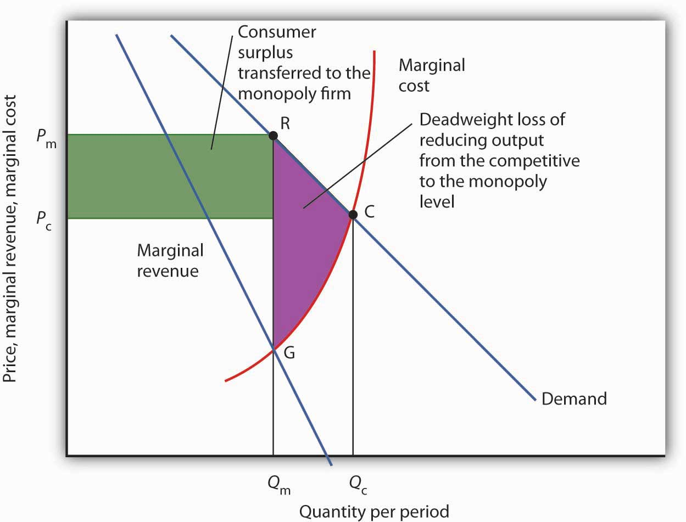

We have seen that for monopolies pursuing profit maximization, the outcome differs from the case of perfect competition. Does this matter to society? In this section, we will focus on the differences that stem from market structure and assess their implications.
A monopoly firm determines its output by setting marginal cost equal to marginal revenue. It then charges the price at which it can sell that output, a price determined by the demand curve. That price exceeds marginal revenue; it therefore exceeds marginal cost as well. That contrasts with the case in perfect competition, in which price and marginal cost are equal. The higher price charged by a monopoly firm may allow it a profit—in large part at the expense of consumers, whose reduced options may give them little say in the matter. The monopoly solution thus raises problems of efficiency, equity, and the concentration of power.
The fact that price in monopoly exceeds marginal cost suggests that the monopoly solution violates the basic condition for economic efficiency, that the price system must confront decision makers with all of the costs and all of the benefits of their choices. Efficiency requires that consumers confront prices that equal marginal costs. Because a monopoly firm charges a price greater than marginal cost, consumers will consume less of the monopoly’s good or service than is economically efficient.
To contrast the efficiency of the perfectly competitive outcome with the inefficiency of the monopoly outcome, imagine a perfectly competitive industry whose solution is depicted in Figure 10.7 "Perfect Competition, Monopoly, and Efficiency". The short-run industry supply curve is the summation of individual marginal cost curves; it may be regarded as the marginal cost curve for the industry. A perfectly competitive industry achieves equilibrium at point C, at price Pc and quantity Qc.
Figure 10.7 Perfect Competition, Monopoly, and Efficiency
Given market demand and marginal revenue, we can compare the behavior of a monopoly to that of a perfectly competitive industry. The marginal cost curve may be thought of as the supply curve of a perfectly competitive industry. The perfectly competitive industry produces quantity Qc and sells the output at price Pc. The monopolist restricts output to Qm and raises the price to Pm.
Reorganizing a perfectly competitive industry as a monopoly results in a deadweight loss to society given by the shaded area GRC. It also transfers a portion of the consumer surplus earned in the competitive case to the monopoly firm.
Now, suppose that all the firms in the industry merge and a government restriction prohibits entry by any new firms. Our perfectly competitive industry is now a monopoly. Assume the monopoly continues to have the same marginal cost and demand curves that the competitive industry did. The monopoly firm faces the same market demand curve, from which it derives its marginal revenue curve. It maximizes profit at output Qm and charges price Pm. Output is lower and price higher than in the competitive solution.
Society would gain by moving from the monopoly solution at Qm to the competitive solution at Qc. The benefit to consumers would be given by the area under the demand curve between Qm and Qc; it is the area QmRCQc. An increase in output, of course, has a cost. Because the marginal cost curve measures the cost of each additional unit, we can think of the area under the marginal cost curve over some range of output as measuring the total cost of that output. Thus, the total cost of increasing output from Qm to Qc is the area under the marginal cost curve over that range—the area QmGCQc. Subtracting this cost from the benefit gives us the net gain of moving from the monopoly to the competitive solution; it is the shaded area GRC. That is the potential gain from moving to the efficient solution. The area GRC is a deadweight loss.
The monopoly solution raises issues not just of efficiency but also of equity. Figure 10.7 "Perfect Competition, Monopoly, and Efficiency" shows that the monopolist charges price Pm rather than the competitive price Pc; the higher price charged by the monopoly firm reduces consumer surplus. Consumer surplus is the difference between what consumers are willing to pay for a good and what they actually pay. It is measured by the area under the demand curve and above the price of the good over the range of output produced.
If the industry were competitive, consumer surplus would be the area below the demand curve and above PcC. With monopoly, consumer surplus would be the area below the demand curve and above PmR. Part of the reduction in consumer surplus is the area under the demand curve between Qc and Qm; it is contained in the deadweight loss area GRC. But consumers also lose the area of the rectangle bounded by the competitive and monopoly prices and by the monopoly output; this lost consumer surplus is transferred to the monopolist.
The fact that society suffers a deadweight loss due to monopoly is an efficiency problem. But the transfer of a portion of consumer surplus to the monopolist is an equity issue. Is such a transfer legitimate? After all, the monopoly firm enjoys a privileged position, protected by barriers to entry from competition. Should it be allowed to extract these gains from consumers? We will see that public policy suggests that the answer is no. Regulatory efforts imposed in monopoly cases often seek to reduce the degree to which monopoly firms extract consumer surplus from consumers by reducing the prices these firms charge.
The objections to monopoly run much deeper than worries over economic efficiency and high prices. Because it enjoys barriers that block potential rivals, a monopoly firm wields considerable market power. For many people, that concentration of power is objectionable. A decentralized, competitive market constantly tests the ability of firms to satisfy consumers, pushes them to find new products and new and better production methods, and whittles away economic profits. Firms that operate in the shelter of monopoly may be largely immune to such pressures. Consumers are likely to be left with fewer choices, higher costs, and lower quality.
Perhaps more important in the view of many economists is the fact that the existence of economic profits provides both an incentive and the means for monopolists to aggressively protect their position and extend it if possible. These economists point out that monopolists may be willing to spend their economic profits in attempts to influence political leaders and public authorities (including regulatory authorities) who can help them maintain or enhance their monopoly position. Graft and corruption may be the result, claim these critics. Indeed, Microsoft has been accused by its rivals of bullying computer manufacturers into installing its web browser, Internet Explorer, exclusively on their computers.
Attitudes about Microsoft reflect these concerns. Even among people who feel that its products are good and fairly priced, there is uneasiness about our seeming dependence on them. And once it has secured its dominant position, will it charge more for its products? Will it continue to innovate?
Pulling together what we have learned in this chapter on monopoly and previously on perfect competition, Table 10.1 "Characteristics of Perfect Competition and Monopoly" summarizes the differences between the models of perfect competition and monopoly. Most importantly we note that whereas the perfectly competitive firm is a price taker, the monopoly firm is a price setter. Because of this difference, we can object to monopoly on grounds of economic efficiency; monopolies produce too little and charge too much. Also, the high price and persistent profits strike many as inequitable. Others may simply see monopoly as an unacceptable concentration of power.
Table 10.1 Characteristics of Perfect Competition and Monopoly
| Characteristic or Event | Perfect Competition | Monopoly |
|---|---|---|
| Market | Large number of sellers and buyers producing a homogeneous good or service, easy entry. | Large number of buyers, one seller. Entry is blocked. |
| Demand and marginal revenue curves | The firm’s demand and marginal revenue curve is a horizontal line at the market price. | The firm faces the market demand curve; marginal revenue is below market demand. |
| Price | Determined by demand and supply; each firm is a price taker. Price equals marginal cost. | The monopoly firm determines price; it is a price setter. Price is greater than marginal cost. |
| Profit maximization | Firms produce where marginal cost equals marginal revenue | Firms produce where marginal cost equals marginal revenue and charge the corresponding price on the demand curve. |
| Profit | Entry forces economic profit to zero in the long run. | Because entry is blocked, a monopoly firm can sustain an economic profit in the long run. |
| Efficiency | The equilibrium solution is efficient because price equals marginal cost. | The equilibrium solution is inefficient because price is greater than marginal cost. |
Public policy toward monopoly generally recognizes two important dimensions of the monopoly problem. On the one hand, the combining of competing firms into a monopoly creates an inefficient and, to many, inequitable solution. On the other hand, some industries are characterized as natural monopolies; production by a single firm allows economies of scale that result in lower costs.
The combining of competing firms into a monopoly firm or unfairly driving competitors out of business is generally forbidden in the United States. Regulatory efforts to prevent monopoly fall under the purview of the nation’s antitrust laws, discussed in more detail in a later chapter.
At the same time, we must be careful to avoid the mistake of simply assuming that competition is the alternative to monopoly, that every monopoly can and should be replaced by a competitive market. One key source of monopoly power, after all, is economies of scale. In the case of natural monopoly, the alternative to a single firm is many small, high-cost producers. We may not like having only one local provider of water, but we might like even less having dozens of providers whose costs—and prices—are higher. Where monopolies exist because economies of scale prevail over the entire range of market demand, they may serve a useful economic role. We might want to regulate their production and pricing choices, but we may not want to give up their cost advantages.
Where a natural monopoly exists, the price charged by the firm and other aspects of its behavior may be subject to regulation. Water or natural gas, for example, are often distributed by a public utility—a monopoly firm—at prices regulated by a state or local government agency. Typically, such agencies seek to force the firm to charge lower prices, and to make less profit, than it would otherwise seek.
Although economists are hesitant to levy blanket condemnations of monopoly, they are generally sharply critical of monopoly power where no rationale for it exists. When firms have substantial monopoly power only as the result of government policies that block entry, there may be little defense for their monopoly positions.
Public policy toward monopoly aims generally to strike the balance implied by economic analysis. Where rationales exist, as in the case of natural monopoly, monopolies are permitted—and their prices are regulated. In other cases, monopoly is prohibited outright. Societies are likely to at least consider taking action of some kind against monopolies unless they appear to offer cost or other technological advantages.
An important factor in thinking about public policy toward monopoly is to recognize that monopoly power can be a fleeting thing. Firms constantly seek out the market power that monopoly offers. When conditions are right to achieve this power, firms that succeed in carving out monopoly positions enjoy substantial profits. But the potential for high profits invites continuing attempts to break down the barriers to entry that insulate monopolies from competition.
Technological change and the pursuit of profits chip away constantly at the entrenched power of monopolies. Breathtaking technological change has occurred in the telecommunications industry. Catalog companies are challenging the monopoly positions of some retailers; internet booksellers and online textbook companies such as gone.2012books.lardbucket.org are challenging the monopoly power of your university’s bookstore; and Federal Express, UPS, and other companies are taking on the U.S. Postal Service. The assaults on monopoly power are continuous. Thus, even the monopoly firm must be on the lookout for potential competitors.
Potential rivals are always beating at the door and thereby making the monopoly’s fragile market contestable—that is, open to entry, at least in the sense of rival firms producing “close enough,” if not perfect, substitutes—close enough that they might eliminate the firm’s monopoly power.
Does the statement below better describe a firm operating in a perfectly competitive market or a firm that is a monopoly?
Back in the olden days—before 1984—to use a telephone in the United States almost certainly meant being a customer of AT&T. Ma Bell, as the company was known, provided local and long-distance service to virtually every U.S. household. AT&T was clearly a monopoly.
The Justice Department began its battle with AT&T in the 1970s, charging it with monopolizing the industry. The case culminated in a landmark 1984 ruling that broke the company up into seven so-called “Baby Bells” that would provide local telephone service. AT&T would continue to provide long-distance service.
In effect, the ruling replaced a single national monopoly with seven regional monopolies in local telephone service. AT&T maintained its monopoly position in long-distance service—for a while. The turmoil that has followed illustrates the fragility of monopoly power.
Technological developments in the industry have brought dramatic changes. Companies found ways to challenge AT&T’s monopoly position in long-distance telephone service. Cable operators sprang up, typically developing monopoly power over the provision of cable television in their regional markets, but also offering phone service. Mobile phone service, provided by AT&T, and others such as Verizon and Sprint, has led many consumers to do without land-line phone service entirely. Companies that had traditionally been telephone companies have begun providing cable services as well as Internet access. The ready availability of video services on the Internet threatens to make cable providers outmoded middlemen.
What is the status of AT&T today? While no longer a monopoly, it is a major player in all of the areas related to telecommunications and larger than all of its competitors in the United States. In 2011, it began the process of buying T-Mobile USA, a mobile service provider focused on the youth market. By the end of that year, however, in the face of strong opposition from the Department of Justice and the Federal Communications Commission on the grounds that the merger would stifle competition in the industry, AT&T announced that it was dropping the deal. Does AT&T have market power today? Undoubtedly. Is it a monopoly? Not anymore.
Source: Company Monitor, USA Telecommunication Report, Q2 2011: 69–79.